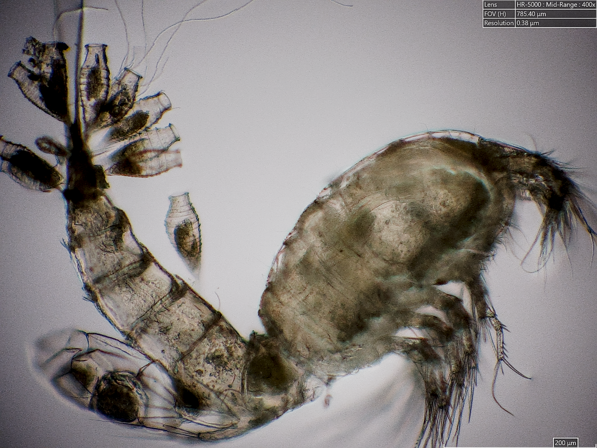
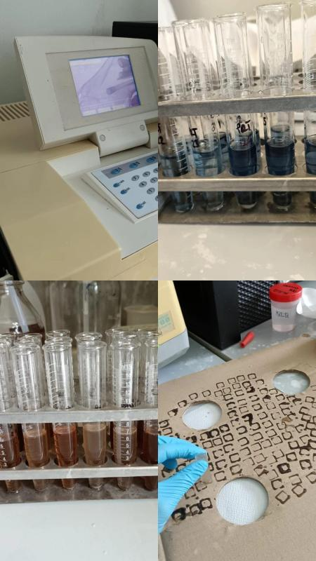
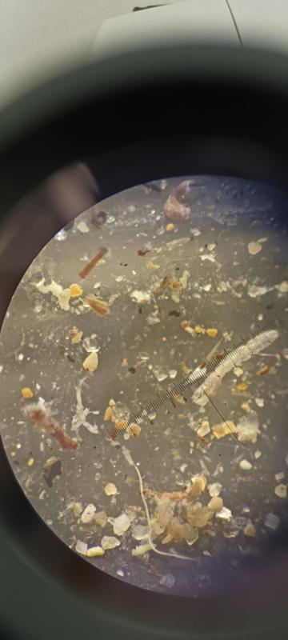
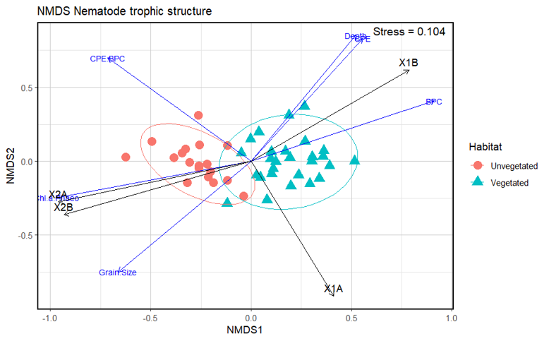
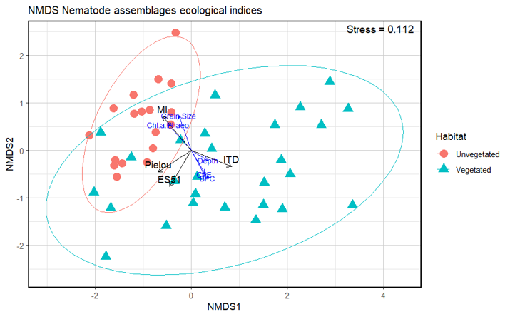

Meiofauna biodiversity and its environmental pattern and drivers in seagrass meadows of the Central Adriatic Sea (Gabicce Mare)
About the Project
This thesis was conducted as part of the European project DiverSEA (Integrated Observation, Mapping, Monitoring and Prediction for Functional BioDIVERsity of Coastal SEAs), whose main purpose is to create an integrated architecture for the observation, monitoring, mapping and prediction of functional biodiversity in European coastal areas, combining emerging techniques (e-DNA/e-RNA, robotics, sensors, remote sensing) and traditional approaches (classical taxonomy using microscopy, molecular analyses).
Why meiofauna are important: Meiofauna plays a central role in benthic food webs, conveying organic matter to higher trophic levels and linking the microbial loop to macro-consumers. They are among the most abundant metazoans in marine sediments and are widely used as biological indicators due to their sensitivity to environmental changes.
Why seagrass meadows are biodiversity hotspots: Seagrass meadows are highly productive ecosystems that act as bioengineers, creating complex three-dimensional habitats that support high biodiversity. They provide shelter, stabilize sediments, and enhance organic matter retention, making them critical for benthic biodiversity and ecosystem functioning.
Study Area
Gabicce Mare
Shallow coastal area in the Central Adriatic Sea (Marche region, Italy), delimited to the north by a touristic harbour and the Tavello River, and to the south by Mount San Bartolo, included within a Regional Natural Park.
SCI Protection
The area is a Site of Community Importance (SCI), recognized for its high naturalistic value and benthic biodiversity. It is enclosed by breakwater barriers that influence local hydrodynamics and sediment transport.
Seagrass Species
The area hosts three seagrass species: Zostera marina, Zostera noltei, and Cymodocea nodosa, forming meadows at depths ranging from 1 to 3.1 meters.
Habitat Comparison
Sampling was designed to compare vegetated sediments (within seagrass meadows) and unvegetated sediments (outside meadow boundaries) to assess the ecological influence of seagrasses on benthic communities.
Research Objectives
Investigate meiofaunal biodiversity
Analyse the biodiversity patterns of meiofaunal assemblages in a shallow coastal area hosting seagrass meadows.
Compare vegetated vs unvegetated sediments
Assess differences in meiofaunal abundance, biomass, diversity and community composition between habitats.
Identify environmental drivers
Determine which environmental factors (seagrass presence, grain size, trophic availability, bathymetry) influence meiofaunal assemblages.
Analyse spatial patterns
Evaluate spatial gradients and distribution patterns of meiofaunal communities across the study area.
Evaluate habitat effects on benthic communities
Quantify the ecological role of seagrass meadows in sustaining benthic biodiversity and ecosystem functioning.
Assess consequences of seagrass loss
Evaluate potential biodiversity declines and ecosystem service losses that would occur with the disappearance of seagrass meadows in the area.
Field Sampling
The study area (15.05 hectares) was mapped prior to sampling using aerial drone surveys combined with underwater visual and photographic quadrat censuses performed by scientific divers. This mapping assessed the distribution and spatial extent of seagrass meadows, allowing the design of a targeted sampling strategy.
🎥 Video footage of the drone and underwater surveys is available below.
Sampling Stations
Laboratory Analyses
🏖️ Grain Size
Udden-Wentworth scale analysis of sediment grain size distribution (sand, silt, clay fractions).
🧪 Organic Matter
Biochemical composition analysis of sedimentary organic matter.
🧬 Biopolymeric Carbon
Measurement of biopolymeric carbon (BPC) as a proxy for available organic carbon.
🥩 Proteins
Total protein concentration (Hartree method, 1972) as indicator of labile organic matter.
🧈 Lipids
Total lipid concentration (Bligh & Dyer, 1959) as a biochemical component of organic matter.
🍬 Carbohydrates
Total carbohydrate concentration (DuBois et al., 1956) as a component of organic matter.
🌿 Pigments
Chlorophyll-a and phaeopigments (Lorenzen & Jeffrey, 1980) as indicators of primary biomass.
🔬 Meiofauna Extraction
Ludox HS40 density gradient centrifugation (Heip et al., 1985) for meiofauna isolation.
📋 Taxonomic ID
Identification of meiofaunal taxa using stereomicroscopy at 40x magnification.
📊 Biodiversity Indices
Taxa richness, abundance, biomass and assemblage composition analysis.


Data Analysis
📈 Species Richness
Total number of higher meiofaunal taxa identified across the study area.
📊 Multivariate Analyses
Advanced statistical techniques to analyse community patterns and environmental relationships.
📉 nMDS
Non-metric Multidimensional Scaling to visualise community composition patterns and gradients.
📐 DISTLM
Distance-based Linear Model to identify environmental drivers explaining community variation.
🔢 PERMANOVA
Permutational Multivariate Analysis of Variance to test significant differences among transects.
🔄 Bray-Curtis
Bray-Curtis dissimilarity matrix applied to assess community structure differences.
Results Figures


Main Findings
Vegetated sediments accumulated higher organic matter
Higher biopolymeric carbon and total phytopigment concentrations were recorded in vegetated sediments compared with unvegetated ones.
Sediment grain size influenced community distribution
Grain size heterogeneity was higher in vegetated sediments, with a greater contribution of fine particles and silt-clay fractions.
Meiofaunal assemblages differed between habitats
Assemblages composition differed significantly between vegetated and unvegetated sediments, with nematoda dominating all transects.
Environmental variables explained spatial variability
Seagrass presence explained up to 55.3% of meiofaunal abundance variation, followed by depth, BPC and grain size.
Different seagrass meadows supported distinct benthic communities
Transects within seagrass meadows (B and C) showed the highest meiofaunal abundance, biomass and diversity.
Seagrass loss would reduce benthic biodiversity
The study highlights potential biodiversity declines and ecosystem service losses that would occur with seagrass meadow disappearance.
Scientific Impact
This study highlights the pivotal role of seagrass meadows in structuring coastal benthic ecosystems, demonstrating how habitat complexity, sediment grain size and trophic conditions are interconnected and act together on meiofaunal assemblages.
The findings contribute to a more comprehensive understanding of seagrass coastal systems ecology and provide valuable insights for the conservation and management of these fundamental ecosystems, whose loss entails not only a reduction in biodiversity but also a huge loss of ecosystem goods and services.
These results, combined with other data collected as part of the DiverSEA project, can support evidence-based conservation strategies and marine spatial planning in Mediterranean coastal areas.
🔬 Meiofauna Organisms

Skills Developed
Downloads
Related Projects
Diversity and trophic structure of nematode assemblages in Gabicce Mare seagrass meadows
Postgraduate research intern project
View Project